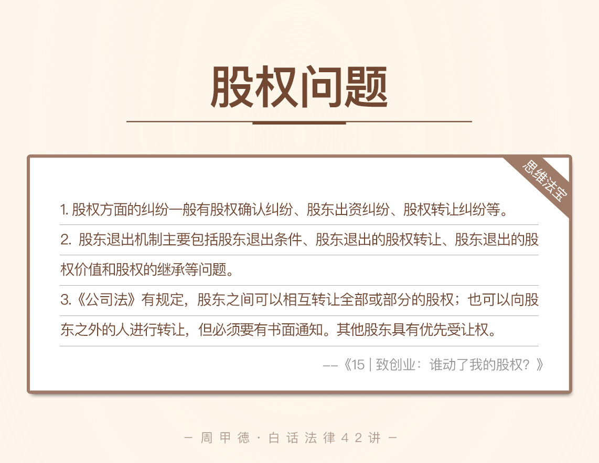

- 00 开篇词 这年头，你真应该懂点法律常识.md
- 01 “老周，我想知道” 常见法律认知盲区（一）.md
- 02 “老周，我想知道” 律师就在你身边（二）.md
- 03 “老周，我想知道” 律师就在你身边（三）.md
- 04 “老周，我想知道” 律师就在你身边（四）.md
- 05 创业未捷老板跑，社保工资哪里讨？.md
- 06 保密还是“卖身”，霸王条款怎么看？.md
- 07 编造流言蹭热度？看守所里降温度！.md
- 08 合同在手欠款难收，报警有用吗？.md
- 09 致创业：谁动了我的股权？.md
- 10 又见猝死！工“殇”究竟是不是工伤？.md
- 11 期权的“前世今生”.md
- 12 裁员面前，你能做的还有什么？.md
- 13 抄袭、盗图为什么做不得？.md
- 14 加班、工资、休假，你知道多少？.md
- 15 受贿原来这么“容易”.md
- 16 今天你用“VPN”了吗？.md
- 17 漏洞在眼前，可以悄悄破解吗？.md
- 18 “爬虫”真的合法吗？.md
- 19 非法集资到底是个啥？.md
- 20 黄色网站？不仅仅是“黄色”罪名.md
- 21 谁修改了我的积分资产？.md
- 22 外挂真能大吉大利吗？.md
- 23 如何看待“从删库到跑路”？.md
- 24 “伪基站”是你的避风港吗？.md
- 25 “网络诈骗”真的离你很远吗？.md
- 26 智斗中介：“北上广”租房图鉴.md
- 27 买买买！买房的“避坑”指南.md
- 28 闪婚又闪离，彩礼怎么理？.md
- 29 离婚还想和平？你要这么做.md
- 30 遗产继承的爱恨情仇.md
- 31 骗术升级？假结婚、假离婚的那些事儿.md
- 32 孩子学校受伤，谁之过？.md
- 33 如何让欠债还钱真正“天经地义”？.md
- 34 从透支到盗刷：人人须知的银行卡纠纷.md
- 35 远离“套路贷”的套路大全.md
- 36 危险！酒驾为什么被罚那么重？.md
- 37 老人倒地，“扶”“不服”？.md
- 38 “能动手就别吵吵”，代价你真的知道吗？.md
- 39 发生交通事故，如何处理？.md
- 40 交通事故综合法宝.md
- 41 婚姻家庭综合法宝.md
- 42 买卖房屋综合法宝.md
- 一键直达 法律专栏“食用”指南.md
- 加餐 “新冠肺炎”影响下，17个常见法律问题解答.md
- 结束语 法律，不会终止的篇章.md
09 致创业：谁动了我的股权？
最近读到这么一句话：“朋友归朋友，生意归生意”。我对这句话颇有体会，一是源于自已的经历，二是平时办案的诸多感触。虽说每个人理解有所不同，但在我看来，主要还是说朋友之间不管有多么要好，多么亲密，合伙做生意还是要慎重。
为什么这么说呢？对我个人而言，这方面最深的体会，就是自己大学刚毕业时，也曾和同学一起合伙做生意，结果因为一些事情没安排清楚，最后不但赔了钱，还伤害了友情。
而从平常办案来看，我也接触了太多朋友翻脸的案例，本来是高高兴兴地开始合伙经营，最后却因各种纷争闹上了法庭，朋友也成了仇人。
比如说，我一朋友老许就曾向我咨询过这么一件烦心事。
老许是一名技术很牛的自动化工程师，在业界也有一定知名度。去年年初，他应好友小吴的邀请一起下海创业。初创业时，两个人也没签什么书面协议，只是粗略分工，并口头约定了“一起打天下、日后平分”。
后来公司业务发展越来越好，也算是慢慢做起来了。但在需要签协议时却出了问题，两个人关于股权的分配产生了严重分歧。悬而未决的股权问题，成了老许一大块儿心病。
两人的公司主要是这么个情况：
公司最初的工商登记为小吴个人独资公司，老许加入后出资30万元，不过一直没签合同，也未做工商变更登记；
公司管理上，老许负责产品和技术，小吴负责运营和财务；
公司现有员工30多人，年净利润约为200万元。
两人存在的争议主要在于：老许认为自己既出资30万元，又有技术出资，因此应该拥有一半股权；小吴则认为公司是自已创建的，老许最多占到30%股权。
老许自认为吃了亏，但是两人又争执不下，该怎么办呢？
刚入门就遇到这么大的争议，确实可见创业之路的坎坷。然而，老许需要解决的不仅是股权纠纷的问题，还有未来会面临的公司控制权、退出机制的问题。同样的，我们先来了解一下这些知识。
法律知识
1. 股权纠纷
关于股权方面的纠纷，比较常见的有股权确认纠纷、股东出资纠纷、股权转让纠纷等。其中：
股权确认纠纷主要是确认股东资格的问题，通常还包括股东所占股权比例等内容。现实中比较常见的是代持股而引发的纠纷，隐名股东首先面对的就是股东资格问题。
股东出资纠纷主要围绕股东是否按照股东协议、公司章程来履行出资义务而产生。现在成立公司时，并不要求实缴出资，也就是不用一次性交全资金，股东可以按照约定来分期出资，因此也产生了较多纠纷。
股权转让纠纷主要是股权的转让问题，通常发生在股东和股东之间、股东和非股东之间。主要是指股权能不能转让、转让给谁、转让价格等问题发生的纠纷。
2. 公司控制权
控制权是指对公司的重大事项具有决定权，控制权的拥有者，一般是持股最高的人、或是事先协商好的人选。谁拥有控制权，谁就可以实际上控制公司。
初创公司一般不存在这个问题，因为公司控制权都在创始人手中。当公司发展到一定规模时，有了董事的存在，对公司的控制主要就是对董事会的控制，所以创业者对控制权的转交要谨慎。
3. 股东退出问题
股东退出机制主要包括股东退出条件、股东退出的股权转让、股东退出的股权价值和股权的继承等问题。
事实上，该问题主要依靠创始人对于股权分配的自行约定，有“五五分”、“成熟机制”等多种方案可作为参考。因为股东退出的问题会影响股权变更，进而涉及后期融资、投资等诸多情况，对公司能否平稳发展至关重要，所以应在初创阶段早早约定好。
在股权转让方面，《公司法》有规定，股东之间可以相互转让全部或部分的股权。
另外，股东也可以向股东之外的人进行转让，但向外部转让有一个前提：需要先通过书面的方式让其他股东知道你要转让。其他股东具有优先受让权，你可以理解为优先购买权。如果其他股东不购买，便可以向外部人员转让股权。
特别注意的是，在没有书面通知的情况下，股权转让不具有法律效力。
情景分析
显然，老许的状况还是比较棘手的。
老许出了投资金，但因为跟小吴私交甚笃，并没有签股权转让协议或者是其他投资协议，更没有写进公司章程，进行工商登记。
可以说，老许遇到的问题，是股权纠纷里是风险最大的一种。一旦小吴不承认他的股东身份，老许便是竹篮打水——一场空。
至于给公司或者小吴的转账记录？那到底算是股东出资，还是私人借款，抑或是其他的生意往来账款，又如何能证明呢？
幸好，老许还没有倒霉到遇上“白眼狼”，朋友小吴目前仍然承认他的股东身份。但是因为缺乏法律认定，主动权不在老许手里，所以，接下来的事情就要抓紧了。
首先，老许一定要跟小吴友好地沟通，晓之以情，动之以理尽量争取最大的权益。
一旦达成一致意见，最重要的是迅速签好协议，修改公司章程，并尽快到工商部门办理工商变更登记。在利益协商上，哪怕稍稍吃点亏，老许也一定要尽快在法律上确认股东身份。
最后，两人注意要约定好公司控制权以及股东退出机制的问题。
思维“法”宝
回过头来，我们知道：
股权问题并不高深，初创时期靠的主要是协议，要对股权所涉及的问题进行约定。
另一点就是要有正规流程，写入公司章程并办理工商登记，也是我们最后的依据。

俗话说，亲兄弟明算账，更何况朋友间有了利益纠葛。
朋友间的信任是合作的基础，但想长久合伙做生意，必须要用白纸黑字把双方的权利义务写清楚。只有这样，在未来发展的道路上，遇到纷争才能有理可依，友情才能更长久，生意才能更长远。
那么，对于今天的分享，关于股权问题，你还有什么疑问吗？日常工作中，你有遇到过或者听说过股权纠葛的故事吗？欢迎留言与我分享，也欢迎分享给身边的人一起讨论学习。
© 2019 - 2023 Liangliang Lee. Powered by gin and hexo-theme-book.